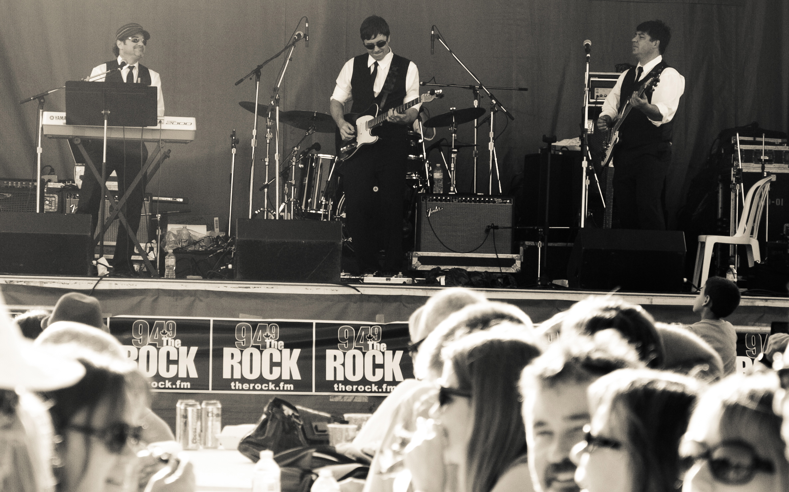
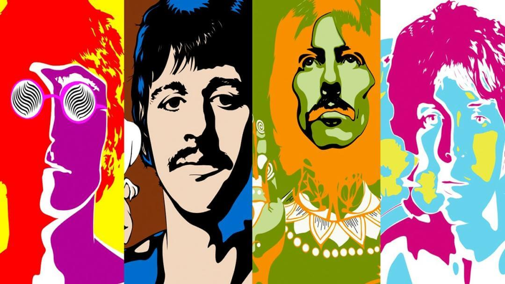
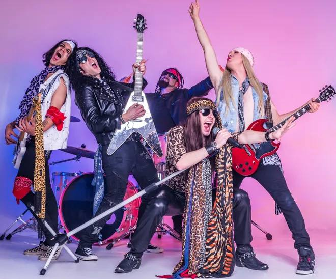
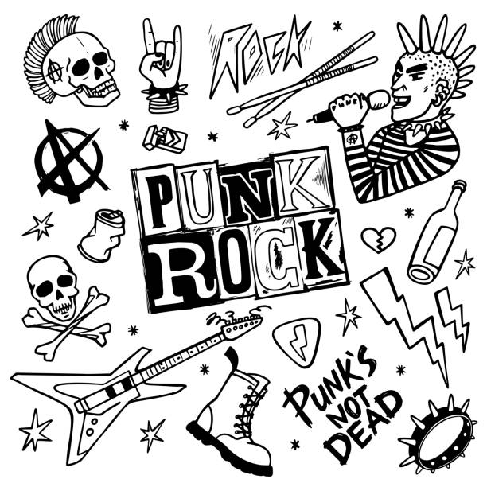

Origins
Rock music began in the 1950s, drawing from blues, R&B, and country. Early pioneers like Chuck Berry and Elvis Presley shaped its foundational sound.

The British Invasion
In the 1960s, British bands such as The Beatles and The Rolling Stones introduced new styles and greatly influenced the global rock scene.
Psychedelic Rock
The 1960s and 70s saw the rise of psychedelic rock with artists like Jimi Hendrix, known for experimental sounds and innovative approaches.
Hard Rock and Punk
The 1970s and 80s introduced hard rock with bands like Led Zeppelin and punk rock with The Ramones, highlighting aggressive and rebellious styles.
Arena Rock and Alternative
Arena rock, with acts like Bon Jovi, and alternative rock, including bands like R.E.M., emerged in the 1980s and 90s, each defining its era.

Grunge and Pop Punk
In the 1990s, grunge bands like Nirvana gained fame with their raw sound, while pop punk bands like Green Day revived energetic punk styles.
Indie Rock
The 2000s saw a rise in indie rock with bands like The Strokes and a revival of classic rock influences, blending traditional and modern sounds.
Revival Rock
Modern rock evolves by blending traditional elements with indie and electronic influences, keeping the genre vibrant and relevant.